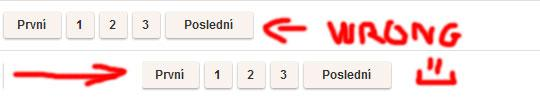

How do I center floated elements?
I'm implementing pagination, and it needs to be centered. The problem is that
the links need to be displayed as block, so they need to be floated. But then,
text-align: center; doesn't work on them. I could achieve it by giving the
wrapper div padding of left, but every page will have a different number of
pages, so that wouldn't work. Here's my code:
.pagination { text-align: center; } .pagination a { display: block; width: 30px; height: 30px; float: left; margin-left: 3px; background: url(/images/structure/pagination-button.png); } .pagination a.last { width: 90px; background: url(/images/structure/pagination-button-last.png); } .pagination a.first { width: 60px; background: url(/images/structure/pagination-button-first.png); } <div class='pagination'> <a class='first' href='#'>First</a> <a href='#'>1</a> <a href='#'>2</a> <a href='#'>3</a> <a class='last' href='#'>Last</a> </div> <!-- end: .pagination -->
To get the idea, what I want:

Answer
Removing floats, and using inline-block may fix your problems:
.pagination a { - display: block; + display: inline-block; width: 30px; height: 30px; - float: left; margin-left: 3px; background: url(/images/structure/pagination-button.png); }
(remove the lines starting with - and add the lines starting with +.)
Show code snippet
.pagination { text-align: center; } .pagination a { + display: inline-block; width: 30px; height: 30px; margin-left: 3px; background: url(/images/structure/pagination-button.png); } .pagination a.last { width: 90px; background: url(/images/structure/pagination-button-last.png); } .pagination a.first { width: 60px; background: url(/images/structure/pagination-button-first.png); } <div class='pagination'> <a class='first' href='#'>First</a> <a href='#'>1</a> <a href='#'>2</a> <a href='#'>3</a> <a class='last' href='#'>Last</a> </div> <!-- end: .pagination -->
inline-block works cross-browser, even on IE6 as long as the element is
originally an inline element.
Quote from quirksmode:
An inline block is placed inline (ie. on the same line as adjacent content), but it behaves as a block.
this often can effectively replace floats:
The real use of this value is when you want to give an inline element a width. In some circumstances some browsers don't allow a width on a real inline element, but if you switch to display: inline-block you are allowed to set a width.” ( http://www.quirksmode.org/css/display.html#inlineblock ).
From the W3C spec:
[inline-block] causes an element to generate an inline-level block container. The inside of an inline-block is formatted as a block box, and the element itself is formatted as an atomic inline-level box.
Suggest
Since many years I use an old trick I learned in some blog, I'm sorry i don't remember the name to give him credits.
Anyway to center floating elements this should work:
You need a structure like this:
.main-container { float: left; position: relative; left: 50%; } .fixer-container { float: left; position: relative; left: -50%; } <div class="main-container"> <div class="fixer-container"> <ul class="list-of-floating-elements"> <li class="floated">Floated element</li> <li class="floated">Floated element</li> <li class="floated">Floated element</li> </ul> </div> </div>
the trick is giving float left to make the containers change the width depending on the content. Than is a matter of position:relative and left 50% and -50% on the two containers.
The good thing is that this is cross browser and should work from IE7+.